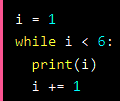

With the while loop we can execute a set of statements as long as a condition is true.
Syntax
while condition:

Note: remember to increment i, or else the loop will continue forever.
The break Statement
With the break statement we can stop the loop even if the while condition is true:

The continue Statement
With the continue statement we can stop the current iteration, and continue with the next:

The else Statement
With the else statement we can run a block of code once when the condition no longer is true: